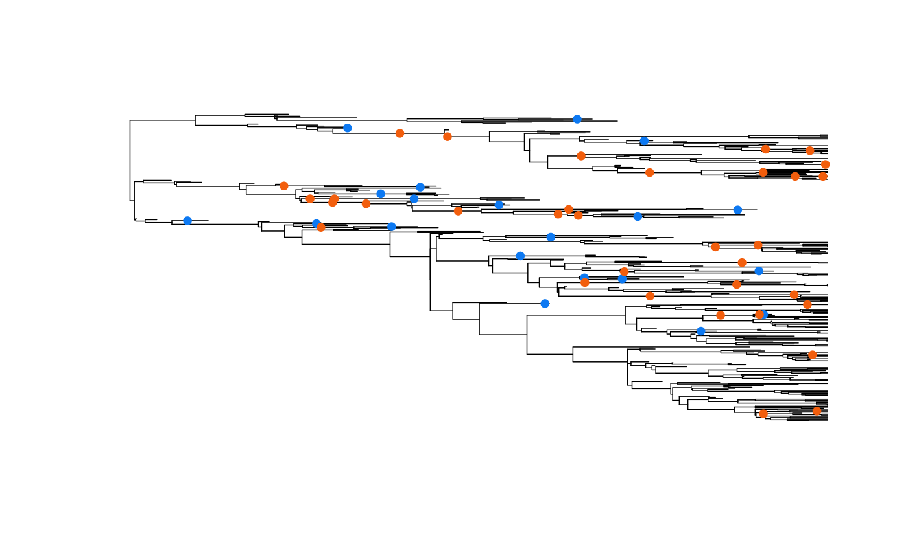
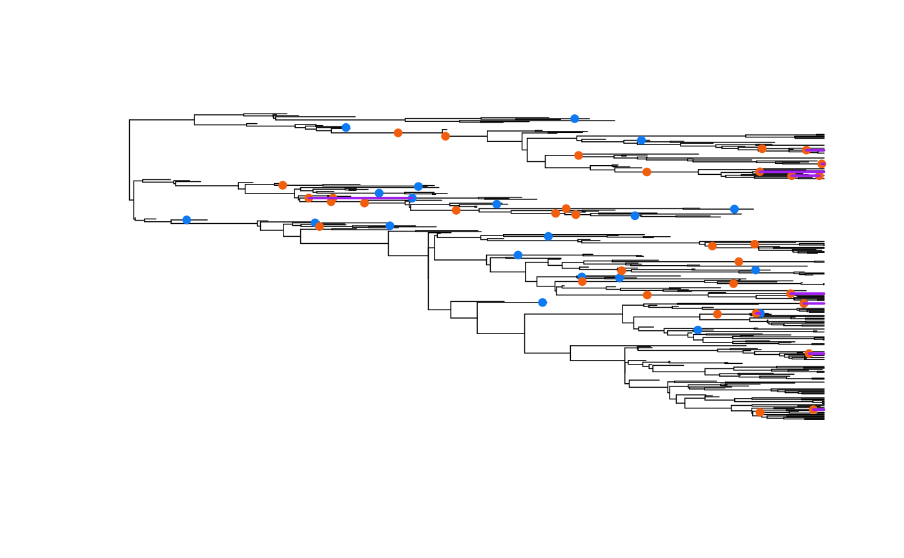

adding_fossils.RmdAs of version 2.1.1, we have added the ability for HiSSE, MuHiSSE, and MiSSE to handle fossils as well as stratigraphic ranges. Our fossilized birth-death model (FBD) closely follows that of Stadler (2010), and includes a new parameter, \(\psi\), that estimates the rate of fossils preservation in a birth-death model. We have extended Stadler’s basic model to the SSE equations of Maddison et al. (2007), the details of which will be included in a forthcoming paper (Beaulieu and O’Meara, In prep). Below I will demonstrate how to set up HiSSE, MuHiSSE, and MiSSE models when the tree and data contain fossils. I will mainly focus on MiSSE, as it is the most straightforward and because it can be used to demonstrate that both the HiSSE and MuHiSSE likelihoods are correct.
Before getting started, be sure to load the hisse and
TreeSim packages.
Also, there are two important terms that need to be understood. Under the FBD there are actually two types of fossils that are sampled. The first are referred to as m fossils, which represent extinct tips – that is, they represent distinct branches that went extinct before the present. The second are referred k fossils, which represent samples of lineages that eventually made it to the present. In most cases, both fossil types must be present for the FBD to work well, though having k fossils is not absolutely critical for hisse whereas m fossils are.
I will first simulate a tree with fossil samples under a simple birth-death model. This will be used as input into MiSSE, which sets up and executes a completely trait-free version of a HiSSE model (i.e., hidden states only). The first step is to simulate a tree that contains the complete history of the trees – that is, includes both taxa that survived to the present and those that did not:
set.seed(42)
phy <- TreeSim::sim.bd.taxa(n = 100, numbsim = 1, lambda = 0.3, mu = 0.2)[[1]]In order to sample both extinct tips and edges, consistent under the fossilized birth-death model, we have written customized functions that takes as input the full tree and a value for \(\psi\) and returns a sampled tree:
f <- GetFossils(phy, psi=0.05)
fbd.tree <- ProcessSimSample(phy, f)The first function, GetFossils() samples edges and
extinct tips and provides a detailed table about these samples. The
second function, ProcessSimSample(), takes the detailed
table and provides a phylogeny that contains sampled extinct tips and a
table that contains the location of the edge samples. Let’s look at the
setup of the edge samples table:
names(fbd.tree)## [1] "phy" "k.samples"
head(fbd.tree$k.samples)## taxon1 taxon2 timefrompresent
## 1 t18 t18 0.140477424088765
## 2 t128 t128 0.283143212511774
## 3 t147 t147 0.645288117495184
## 4 t12 t12 0.904722385034816
## 5 t3 t3 1.0610585239709
## 6 t85 t85 1.21026844132688Internally, MiSSE will assume that the two taxa specified has an MRCA
that is subtended by the branch where these edge fossils are located.
The time from the present will know at what point on this branch this
sample was taken. Note that if the branch from which a sample was taken
is a tip branch, simply list the tip taxon twice (e.g., taxon1=“sp12”,
taxon2=“sp12”). Internally, MiSSE will place these fossils for you. For
hisse() this table requires the state (if they are
present):
k.samples <- data.frame(taxon1="sp12", taxon2="sp12", timefrompresent=3.164384,
state=1, stringsAsFactors=FALSE)and MuHiSSE(),
k.samples <- data.frame(taxon1="sp12", taxon2="sp12", timefrompresent=3.164384,
state1=0, state2=1, stringsAsFactors=FALSE)Running MiSSE() (or hisse(), and
MuHiSSE()) is essentially the same as before,
turnover <- c(1)
eps <- c(1)
one.rate <- MiSSE(fbd.tree$phy, f=1, turnover=turnover, eps=eps,
includes.fossils=TRUE, k.samples=fdb.tree$k.samples, sann=TRUE,
sann.its=1000)Note that the only two additions to the function call are
includes.fossils=TRUE, which indicates that the tree
contains at least m fossils, and k.samples= that
takes the table of edge samples. If no edge samples exist, this can be
set to NULL,
one.rate <- MiSSE(fbd.tree$phy, f=1, turnover=turnover, eps=eps,
includes.fossils=TRUE, k.samples=NULL, sann=TRUE, sann.its=1000)and the estimate of \(\psi\) will reflect sampling of extinct tips only. This actually has a pronounced effect on the parameter estimates generally and is a general violation of the fossilized birth-death model of Stadler (2010).
When reconstructing rates and/or states on the tree, the
MarginReconMiSSE() also requires the same inputs:
margin.test <- MarginReconMiSSE(phy=fbd.tree$phy, f=1, pars=one.rate$solution,
hidden.states=1, includes.fossils=TRUE, k.samples=fbd.tree$k.samples,
aic=one.rate$AIC)The general structure for running hisse() and
MuHiSSE() is identical to running MiSSE().
Below are examples that assume that the tree contains extinct taxa and a
properly formatted k.samples table (assuming there are edge
samples).
HiSSE:
trans.rate <- TransMatMakerHiSSE()
pp <- hisse(phy=fbd.tree$phy, data, f=c(1,1), turnover=c(1,1), eps=c(1,1),
trans.rate=trans.rate, k.samples=fbd.tree$k.samples,
includes.fossils=TRUE)
margin.test <- MarginReconHiSSE(phy=fbd.tree$phy, data=data, f=c(1,1),
pars=pp$solution, hidden.states=1, includes.fossils=TRUE,
k.samples=fbd.tree$k.samples)MuHiSSE:
trans.rate <- TransMatMakerMuHiSSE()
pp <- MuHiSSE(phy=fbd.tree$phy, data, f=c(1,1,1,1), turnover=c(1,1,1,1),
eps=c(1,1,1,1), trans.rate=trans.rate, k.samples=k.samples,
includes.fossils=TRUE)
margin.test <- MarginReconMuHiSSE(phy=fbd.tree$phy, data=data, f=c(1,1,1,1),
pars=pp$solution, hidden.states=1, includes.fossils=TRUE,
k.samples=fbd.tree$k.samples)We have also implemented the FBD model with stratigraphic ranges and
I will show how to set up a standard run using the simulated data above.
The first step is to take the fossil set sampled above and convert them
to stratigraphic ranges. This can be done using a custom function within
hisse:
strat.tree <- ProcessSimStrat(phy, f)As with the ProcessSimSample(),
ProcessSimStrat() takes the sampled fossil set and provides
a phylogeny that contains sampled extinct tips and a table that contains
the location of each stratigraphic range. The table of stratigraphic
ranges requires a particular format:
names(strat.tree)## [1] "phy" "strat.intervals"
head(strat.tree$strat.intervals)## taxon1 taxon2 timefrompresentroot timefrompresenttip type
## 1 t18 t18 0.140477424088765 1.4210854715202e-14 R
## 2 t128 t128 1.93906488777661 0.283143212511774 R
## 3 t147 t147 0.645288117495184 7.105427357601e-15 R
## 4 t12 t12 0.904722385034816 1.4210854715202e-14 R
## 5 t3 t3 1.0610585239709 1.4210854715202e-14 R
## 6 t85 t85 1.21026844132688 1.4210854715202e-14 RThe columns taxon1 and taxon2 are two taxa
specified whose MRCA is subtended by the branch where the stratigraphic
range is located. The timefrompresentroot is the time at
the rootward end stratigraphic range (denoted by \(o_{i}\) by Stadler et al. 2018) and
timefrompresenttip is the time at the tipward end of range
(denoted by \(y_{i}\)). Finally, the
column type contains either an R for true stratigraphic
ranges (i.e., o_{i} - y_{i} > 0) or an S for singleton fossils (i.e.,
o_{i} - y_{i} = 0). Note, as with the canoical FBD implementation above,
if the branch from which a range was sampled is a tip branch, simply
list the tip taxon twice (e.g., taxon1=“sp12”, taxon2=“sp12”).
A run proceeds exactly as before, except instead we supply the stratigraphic range table to the “strat.interval” option in the function call:
turnover <- c(1)
eps <- c(1)
one.rate <- MiSSE(strat.tree$phy, f=1, turnover=turnover, eps=eps,
includes.fossils=TRUE, k.samples=NULL,
strat.intervals=strat.tree$strat.intervals, sann=TRUE,
sann.its=5000)When reconstructing rates and/or states on the tree, the
MarginReconMiSSE() also requires the same inputs:
margin.test <- MarginReconMiSSE(phy=strat.tree$phy, f=1, pars=one.rate$solution,
hidden.states=1, includes.fossils=TRUE, k.samples=NULL,
strat.intervals=strat.tree$strat.intervals, aic=one.rate$AIC)Plotting functions of the reconstructions work as they did before and do not require any additional arguments. However, we have added functionality for overlaying the fossil set and stratigraphic ranges obtained from our simulation functions. For example, here I will plot the full simulated tree from above, and then add the m and k fossils as points onto of the phylogeny:
plot(ladderize(phy), show.tip.label=FALSE, edge.width=0.75)
### Split the table into m and k for the points ###
extinct.samples <- f[which(f$fossiltype_long=="extinct_terminal" |
f$fossiltype_long=="extinct_internal"),]
k.samples.tmp <- extinct.samples[which(extinct.samples$has_sampled_descendant == TRUE),]
extinct.samples <- extinct.samples[which(extinct.samples$has_sampled_descendant == FALSE),]
k.samples <- f[which(f$fossiltype_long == "surviving_terminal" |
f$fossiltype_long == "surviving_internal"),]
k.samples <- rbind(k.samples, k.samples.tmp)
AddFossilPoints(ladderize(phy), f=extinct.samples, pch=19, cex=0.8,
col="#0D79F2")
AddFossilPoints(ladderize(phy), f=k.samples, pch=19, cex=0.8, col="#F25E0D")
We can also overaly the lines designating stratigraphic ranges:
plot(ladderize(phy), show.tip.label=FALSE, edge.width=0.75)
AddFossilPoints(ladderize(phy), f=extinct.samples, pch=19, cex=0.8,
col="#0D79F2")
AddFossilPoints(ladderize(phy), f=k.samples, pch=19, cex=0.8, col="#F25E0D")
AddStratIntervals(ladderize(phy), f=f, pch=19, cex=0.8, col="purple", lwd=2)
The easiest way to check that the likelihoods calculated by
MiSSE(), hisse(), and MuHiSSE()
for the standard FBD are correct is to take the likelihood calculated by
MiSSE() and add this to the likelihood of a simple Markov
transition model. As described in Caetano et al. (2018), an SSE model
jointly maximizes the probability of the observed states at the tips
and the observed tree, given the model. Thus, if the character
is completely disassociated from the rate differences in the tree (with
what we call a character independent model) then this test should
work.
I will show this test here. First, I will calculate the likelihood of a simple BiSSE model, where the diversification rates are the same for states 0 and 1, on a simulated dataset that contains fossils:
library(diversitree)
pars <- c(0.1, 0.2, 0.03, 0.03, 0.01, 0.01)
set.seed(4)
phy <- NULL
while( is.null( phy ) ){
phy <- tree.bisse(pars, max.t=30, x0=0, include.extinct=TRUE)
}
k.samples <- data.frame(taxon1="sp12", taxon2="sp12", timefrompresent=3.164384,
state=1, stringsAsFactors=FALSE)
hidden.states=FALSE
phy.k <- hisse:::AddKNodes(phy, k.samples)
fix.type <- hisse:::GetKSampleMRCA(phy.k, k.samples)
nb.tip <- Ntip(phy.k)
nb.node <- phy.k$Nnode
gen <- hisse:::FindGenerations(phy.k)
data <- data.frame(taxon=names(phy$tip.state), phy$tip.state,
stringsAsFactors=FALSE)
data <- hisse:::AddKData(data, k.samples)
data.new <- data.frame(data[,2], data[,2], row.names=data[,1])
data.new <- data.new[phy.k$tip.label,]
dat.tab <- hisse:::OrganizeDataHiSSE(data.new, phy=phy.k, f=c(1,1),
hidden.states=FALSE, includes.fossils=TRUE)
edge_details <- hisse:::GetEdgeDetails(phy=phy.k,
intervening.intervals=strat.cache$intervening.intervals)
fossil.taxa <- edge_details$tipward_node[which(edge_details$type == "extinct_tip")]
pars.bisse <- c(0.1+0.03, 0.1+0.03, 0.03/0.1, 0.03/0.1, 0.01, 0.01)
model.vec <- numeric(48)
model.vec[1:6] = pars.bisse
phy$node.label = NULL
cache <- hisse:::ParametersToPassfHiSSE(model.vec, hidden.states=hidden.states,
nb.tip=Ntip(phy.k), nb.node=Nnode(phy.k), bad.likelihood=-300,
f=c(1,1), ode.eps=0)
cache$psi <- 0.01
hisse.full <- hisse:::DownPassHiSSE(dat.tab, gen, cache, root.type="madfitz",
condition.on.survival=TRUE, root.p=NULL, node=fix.type$node,
state=fix.type$state, fossil.taxa=fossil.taxa,
fix.type=fix.type$type)Next we will calculate the likelihood of just the tree using
MiSSE():
dat.tab <- hisse:::OrganizeDataMiSSE(phy=phy.k, f=1, hidden.states=1, includes.fossils=TRUE)
model.vec <- c(0.1+0.03, 0.03/0.1, rep(0,51))
cache = hisse:::ParametersToPassMiSSE(model.vec=model.vec, hidden.states=1,
fixed.eps=NULL, nb.tip=nb.tip, nb.node=nb.node,
bad.likelihood=exp(-500), ode.eps=0)#
cache$psi <- 0.01
gen <- hisse:::FindGenerations(phy.k)
MiSSE.logL <- hisse:::DownPassMisse(dat.tab=dat.tab, cache=cache, gen=gen,
condition.on.survival=TRUE, root.type="madfitz", root.p=NULL,
fossil.taxa=fossil.taxa, node=fix.type$node, fix.type=fix.type$type)Finally, I will use corHMM to calculate the likelihood
of just character data:
library(corHMM)
char.logL <- corHMM(phy.k, data, rate.cat=1, model = "ER", node.states = "none",
fixed.nodes=FALSE, p=0.01, root.p="maddfitz")## You specified 'fixed.nodes=FALSE' but included a phy object with node labels. These node labels have been removed.## Warning in corHMM(phy.k, data, rate.cat = 1, model = "ER", node.states =
## "none", : Branch lengths of 0 detected. Adding 1e-5 to these branches.## State distribution in data:
## States: 1 2
## Counts: 2 17
## Calculating likelihood from a set of fixed parametersWe can compare the likelihoods obtained from hisse()
against the sum of the tree and the character:
tot.logL <- char.logL$loglik + MiSSE.logL
comparison <- identical(round(hisse.full,3), round(tot.logL,3))
comparison ## [1] TRUEThis confirms that the calculations are correct. I will show the same
using MuHiSSE():
library(diversitree)
pars <- c(.1, .15, .2, .1,
.03, .045, .06, 0.03,
.05, .05, .00,
.05, .00, .05,
.05, .00, .05,
.00, .05, .05)
set.seed(2)
phy <- NULL
while( is.null( phy ) ){
phy <- tree.musse(pars, 30, x0=1, include.extinct=TRUE)
}
k.samples <- data.frame(taxon1="sp20", taxon2="sp37", timefrompresent=8.54554,
state1=0, state2=1, stringsAsFactors=FALSE)
phy.k <- hisse:::AddKNodes(phy, k.samples)
fix.type <- hisse:::GetKSampleMRCA(phy.k, k.samples)
nb.tip <- Ntip(phy.k)
nb.node <- phy.k$Nnode
gen <- hisse:::FindGenerations(phy.k)
states <- phy$tip.state
states <- data.frame(phy$tip.state, phy$tip.state,
row.names=names(phy$tip.state))
states <- states[phy$tip.label,]
states.trans <- states
for(i in 1:Ntip(phy)){
if(states[i,1] == 1){
states.trans[i,1] = 0
states.trans[i,2] = 0
}
if(states[i,1] == 2){
states.trans[i,1] = 0
states.trans[i,2] = 1
}
if(states[i,1] == 3){
states.trans[i,1] = 1
states.trans[i,2] = 0
}
if(states[i,1] == 4){
states.trans[i,1] = 1
states.trans[i,2] = 1
}
}
data <- data.frame(taxon=names(phy$tip.state),
states.trans[,1], states.trans[,2], stringsAsFactors=FALSE)
data <- hisse:::AddKData(data, k.samples, muhisse=TRUE)
data.new <- data.frame(data[,2], data[,3], row.names=data[,1])
data.new <- data.new[phy.k$tip.label,]
pars.muhisse <- c(rep(0.1+0.03,4), rep(0.03/.1, 4), 0.05,0.05,0, 0.05,0,0.05,
0.05,0,.05, 0,0.05,.05)
model.vec = rep(0,384)
model.vec[1:20] = pars.muhisse
cache <- hisse:::ParametersToPassMuHiSSE(model.vec=model.vec, hidden.states=FALSE,
nb.tip=Ntip(phy.k), nb.node=Nnode(phy.k), bad.likelihood=exp(-500),
f=c(1,1,1,1), ode.eps=0)
cache$psi <- 0.01
gen <- hisse:::FindGenerations(phy.k)
dat.tab <- hisse:::OrganizeData(data.new, phy.k, f=c(1,1,1,1),
hidden.states=FALSE, includes.fossils=TRUE)
fossil.taxa <- which(dat.tab$branch.type == 1)
muhisse.full <- hisse:::DownPassMuHisse(dat.tab, gen=gen, cache=cache,
root.type="madfitz", condition.on.survival=TRUE, root.p=NULL,
node=fix.type$node, state=fix.type$state, fossil.taxa=fossil.taxa,
fix.type=fix.type$type)
## Trait independent model should be loglik_tree + loglik_character ##
#Part 1: MiSSE loglik:
dat.tab <- hisse:::OrganizeDataMiSSE(phy=phy.k, f=1, hidden.states=1, includes.fossils=TRUE)
model.vec <- c(0.1+0.03, 0.03/0.1, rep(0,51))
cache = hisse:::ParametersToPassMiSSE(model.vec=model.vec, hidden.states=1,
fixed.eps=NULL, nb.tip=nb.tip, nb.node=nb.node,
bad.likelihood=exp(-500), ode.eps=0)#
cache$psi <- 0.01
edge_details <- hisse:::GetEdgeDetails(phy=phy.k,
intervening.intervals=strat.cache$intervening.intervals)
fossil.taxa <- edge_details$tipward_node[which(edge_details$type == "extinct_tip")]
gen <- hisse:::FindGenerations(phy.k)
MiSSE.logL <- hisse:::DownPassMisse(dat.tab=dat.tab, cache=cache, gen=gen,
condition.on.survival=TRUE, root.type="madfitz", root.p=NULL,
fossil.taxa=fossil.taxa,node=fix.type$node, fix.type=fix.type$type)
#Part 2: corHMM loglik:
char.logL <- corHMM(phy.k, data, rate.cat=1, model = "ER", node.states = "none",
fixed.nodes=FALSE, p=0.05, root.p="maddfitz")## You specified 'fixed.nodes=FALSE' but included a phy object with node labels. These node labels have been removed.## Warning in corHMM(phy.k, data, rate.cat = 1, model = "ER", node.states =
## "none", : Branch lengths of 0 detected. Adding 1e-5 to these branches.## State distribution in data:
## States: 1 2 3 4
## Counts: 12 21 6 3
## Calculating likelihood from a set of fixed parameters
tot.logL <- char.logL$loglik + MiSSE.logL
comparison <- identical(round(muhisse.full,3), round(tot.logL,3))
comparison## [1] TRUECaetano, D.S., B.C. O’Meara, and J.M. Beaulieu. (2018). Hidden state models improve state-dependent diversification approaches, including biogeographic models. Evolution, 72:2308-2324.
Stadler, T. (2010). Sampling-through-time in birth-death trees. Journal of Theoretical Biology, 267:396-404.
Stadler T., Gavryushkina A., Warnock R.C.M., Drummond A.J., Heath T.A. 2018. The fossilized birth-death model for analysis of stratigraphic range data under different speciation modes. Journal of Theoretical Biology 447:41-55.